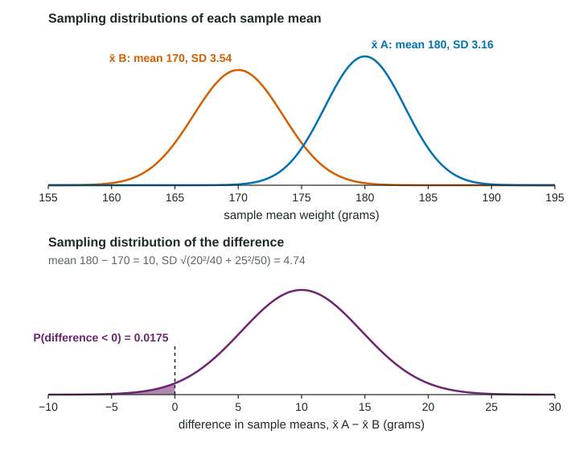

Sampling Distributions for the Difference Between Two Sample Means
For independent random samples (or randomly assigned groups), x-bar_1 − x-bar_2 has mean μ_1 − μ_2 and standard deviation √((σ_1²)/(n_1) + (σ_2²)/(n_2)) , and it is approximately normal when each sample mean is.
Part 1 · Hook
Why this matters
Part 2 · Before you start
What this builds on
Part 3 · Prerequisite check
Quick check before you start
1. For random samples of size (under 10% of the population), the standard deviation of is
Show the answer
; its square, , is the variance of .
- Correct: :
- :
- :
- :
2. For two independent samples, the standard deviation of is
Show the answer
The two variances add, then take the square root.
- Correct: :
- :
- :
- :
Part 4 · See it
See it first

Part 5 · Step by step
How it works, step by step
- Each sample mean is centered at its population meanthe difference is centered at
- Each sample mean has its own variability, and for independent samples the variances add, so the difference varies more than either mean
- Take the square root of the sum
- If each sample mean is approximately normal (normal population or for each)the difference is approximately normal, and z-scores give probabilities
Part 6 · Key ideas
Key ideas
- Center:
. - Spread:
for independent samples (or groups formed by random assignment), each under 10% of its population when sampling. - Variances add, never standard deviations, and never subtract.
- Shape: normal if both populations are normal; approximately normal if both and .
Part 7 · Misconception
A common mistake
The wrong idea: The means are subtracted, so the variability of the difference is the first variance minus the second.
What actually happens: Both sample means wobble, and both wobbles end up in the difference. For independent samples the variances add: .
Part 8 · Check yourself
Check yourself
Exam-style questions. Anything you miss goes into your review queue.
Table
Apples from two orchards
Apple weights at two large orchards (invented data): at orchard A the mean is 180 grams with standard deviation 20 grams; at orchard B the mean is 170 grams with standard deviation 25 grams. A buyer takes independent random samples of 40 apples from A and 50 apples from B, each from the thousands harvested, and computes , the difference in sample means.
| Orchard | Population mean | Population SD | Sample size |
|---|---|---|---|
| A | 180 g | 20 g | 40 |
| B | 170 g | 25 g | 50 |
1. What is the mean of the sampling distribution of ?
- 0 grams
- 10 grams
- 350 grams
- 4.74 grams
Show the answer
- 0 grams: That would be true only if the two orchards had the same mean weight.
- Correct: 10 grams: The mean of a difference of sample means is the difference of the population means: grams.
- 350 grams: That adds the means. The statistic is a difference, so subtract.
- 4.74 grams: That is the standard deviation of the difference, not its mean.
2. What is the standard deviation of the sampling distribution of , in grams?
Type a number, in grams. A table answer and a calculator answer are both accepted.
Show the answer
- Answer: 4.74 grams
3. Write the expression for the standard deviation of . Type it as on the exam, for example sqrt(a^2/m + b^2/n).
Type the expression as on the exam, with the values substituted.
Show the answer
- Answer:
4. What is the probability that the sample mean weight from orchard A is less than the sample mean weight from orchard B (that is, )?
Type a number. A table answer and a calculator answer are both accepted.
Show the answer
is approximately normal with mean 10 and standard deviation 4.74.
- Answer: 0.0175
5. Why does the standard deviation of add the two variances, even though the means are subtracted?
- Because subtracting a negative number is the same as adding a positive one
- Because the two samples are the same size
- Because the second mean is usually smaller than the first
- Each sample mean varies on its own, and both kinds of variation show up in the difference
Show the answer
For independent samples,
- Because subtracting a negative number is the same as adding a positive one: The rule is about variability, not about signs.
- Because the two samples are the same size: The rule holds for any sample sizes, as long as the samples are independent.
- Because the second mean is usually smaller than the first: The sizes of the means do not matter; their variability does.
- Correct: Each sample mean varies on its own, and both kinds of variation show up in the difference: A difference can be off because is high, because is low, or both, so its spread is larger than either one's.
6. A coach records each of 25 runners' mile time in the morning and again in the evening. Why should the formula not be used for the morning mean minus the evening mean?
- The two sets of times come from the same runners, so they are not independent samples
- The sample of 25 is smaller than 30
- Mile times are not normally distributed
- The formula is for proportions, not for means
Show the answer
The variance formula needs two independent samples. Measurements on the same individuals are paired, so use the differences and a one-sample method.
- Correct: The two sets of times come from the same runners, so they are not independent samples: A fast runner is fast both times, so the two means move together. Paired data are analyzed through the differences instead.
- The sample of 25 is smaller than 30: Sample size affects the shape, not whether this formula applies.
- Mile times are not normally distributed: Shape is a separate condition; the issue is dependence.
- The formula is for proportions, not for means: This is the formula for means; it needs independent samples.
Part 9 · Summary
Summary
Part 10 · Up next
What comes next
Part 11 · Connections